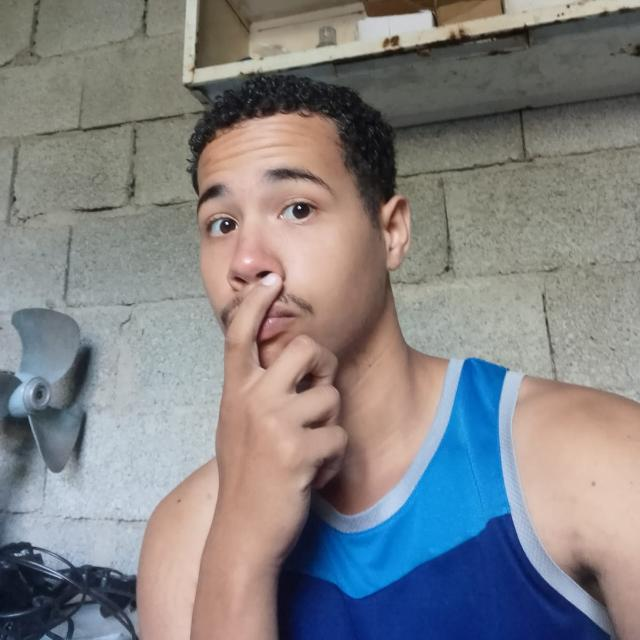

Informações sobre o projeto
Criamos a empresa Conecctive com o objetivo de oferecer uma plataforma inovadora que facilite a conexão entre trabalhadores e clientes, visando agilizar o encontro entre profissionais e oportunidades de trabalho. Nosso propósito é proporcionar uma experiência livre e espontânea, permitindo que os trabalhadores aumentem sua renda de forma eficiente, ao mesmo tempo em que auxiliamos os clientes a resolver seus problemas de maneira prática e rápida, conectando-os aos profissionais adequados para suas necessidades.
A Conecctive oferece uma ampla gama de categorias, abrangendo áreas como edificações, limpeza, tecnologia da informação, montagem de imóveis e muito mais. Por meio de nossa plataforma, os usuários poderão encontrar profissionais qualificados em diversas especialidades, com a garantia de um serviço confiável e eficaz.
Nossa missão é promover a conexão entre trabalhadores e clientes de maneira eficiente, simplificando o processo de contratação e tornando a experiência de encontrar serviços profissionais mais acessível e conveniente para todos os envolvidos.
Estamos comprometidos em proporcionar uma plataforma confiável e intuitiva, impulsionada pela inovação tecnológica, para tornar a conexão entre trabalhadores e clientes uma experiência prazerosa e benéfica para ambos.
Equipe Inotec
Integrantes do grupo
 Ana Paula Finotelli - Documentação e suporte ao front-end.
Ana Paula Finotelli - Documentação e suporte ao front-end.- Davi José Batista Lima de Oliveira - Back-end, banco de dados e suporte ao front-end.
 Leonardo Gomes da Cunha - Front-end, design e suporte no back-end
Leonardo Gomes da Cunha - Front-end, design e suporte no back-end
Valores
- Ética
- Proatividade
- Comprometimento
- Transparência
- Honestidade
- Criatividade e inovação
Orientadora
- Graciete Henriques dos Santos - Orientadora Do TCC.